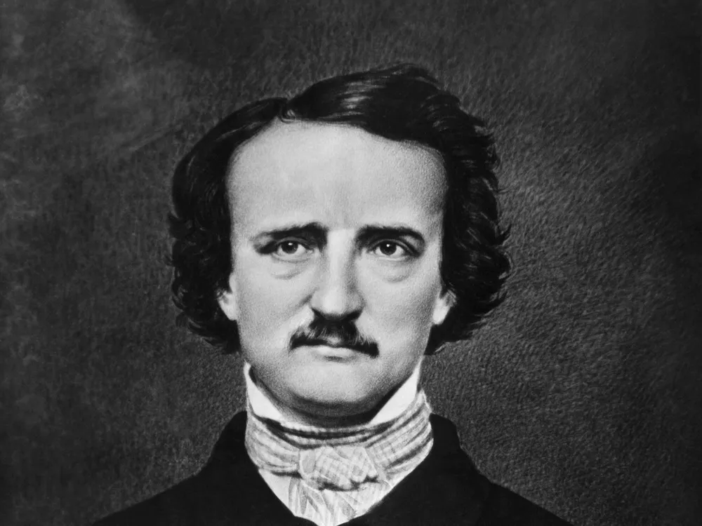

Edgar Allan Poe
Home
Stories

Edgar Allan Poe was born in January 19, 1809.
His first story
"Metzengerstein"
was released on January 14 1832.
Edgar Allan Poe's most famous story is
"The Tell-Tale Heart"
and it was released in January 1843.
List of all Edgar Allan Poe Stories